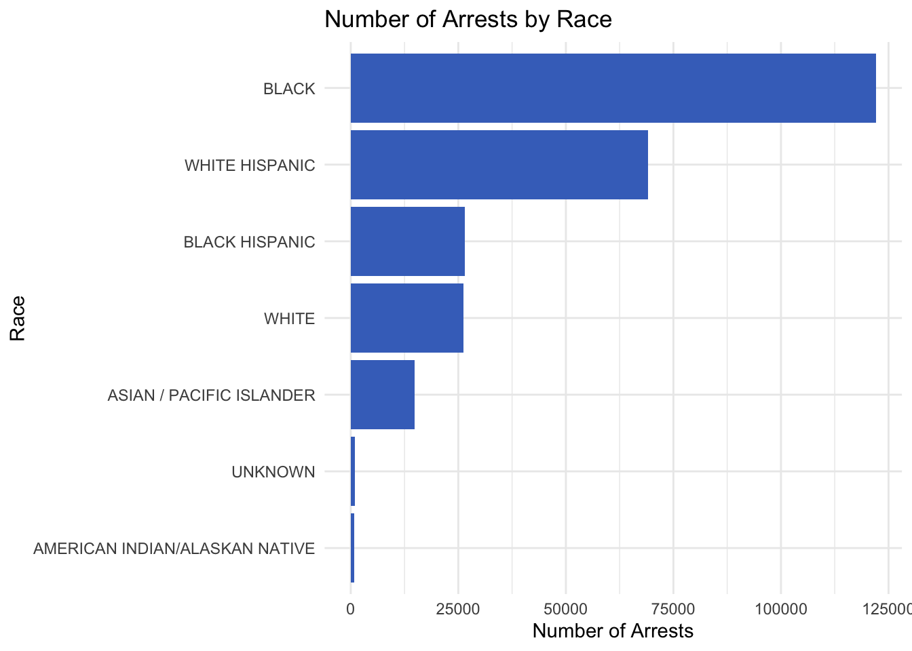
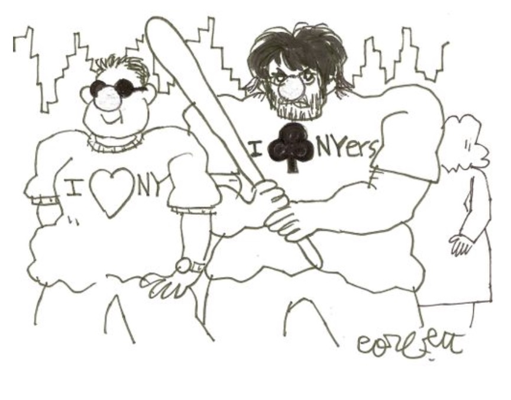
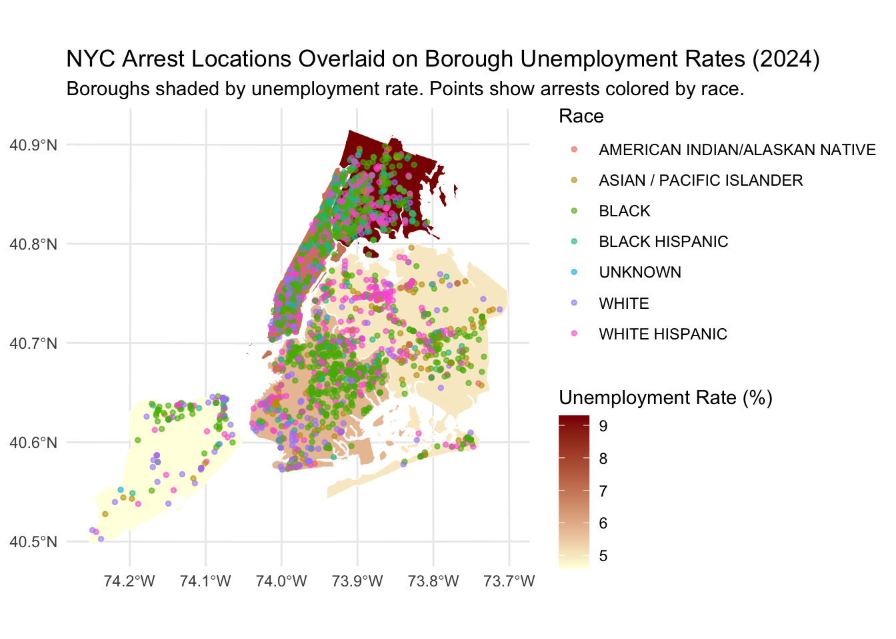
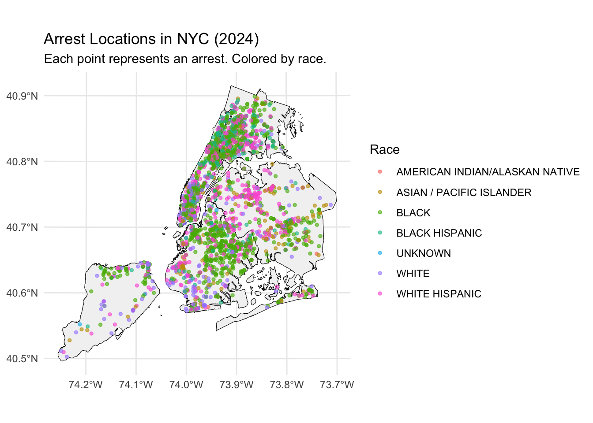

Data
We describe the sources of our data and the cleaning process.

Data Sources and Description
Our project merges NYPD Arrest Data with American Community Survey (ACS) unemployment data. This section outlines the sources, variables of interest, and how we cleaned and prepared the data for analysis.
Original Data Sources
We used two main publicly available datasets for our project:
NYPD Arrest Data
Link: NYPD Arrest Data (Year to Date) — data.gov
Description:
This dataset includes arrest records from the New York Police Department, updated quarterly. It contains details on arrest location, offense description, age group, race, sex of the person arrested, and more.
Publisher: NYC Open Data / NYPD
Last Updated: January 2025
American Community Survey (ACS)
Link: ACS 5-Year Estimates — census.gov
Description:
We extracted borough-level unemployment statistics from ACS table S2301 (Employment Status). These rates were joined with arrest data to study the relationship between local economic conditions and arrests.
Publisher: United States Census Bureau
Data Year: 2023
###️ NYC Borough Shapefile
Link: NYC Borough Boundaries — NYC Planning
Description:
Used for spatial joins and mapping borough-level arrest locations.
Publisher: NYC Department of City Planning
Format: Shapefile (SHP)
Data Cleaning Process
We cleaned and merged multiple datasets into one standardized format, with the cleaned result saved as
combined_nypd_acs_with_coords_fixed.rds.
Major cleaning steps
Selected relevant variables:
perp_race,perp_sex,age_group,ofns_desc,arrest_boro,latitude,longitude,unemployment_rate.Removed missing values in key fields such as
perp_race,perp_sex,age_group, and coordinates.Standardized factor levels: Re-coded values for
age_group,perp_race, andarrest_boroto ensure consistent formatting and interpretation.Cleaned string variables: Trimmed whitespace, fixed inconsistent capitalization (e.g.,
ofns_descandpd_desc), and appliedstr_to_titlewhere appropriate.Joined multiple datasets:
- Merged 2024 NYPD Arrest data with 2023 ACS unemployment data (
S2301,S1701,S1901) by borough. - Used shapefiles (
nybb.shp) to ensure accurate geographic mapping and merge borough-level unemployment statistics to spatial layers.
- Merged 2024 NYPD Arrest data with 2023 ACS unemployment data (
Added spatial coordinates using
sf::st_as_sf()to create ansfobject for mapping purposes, based on thelongitudeandlatitudevalues from the arrest records.Removed unnecessary columns like arrest key, jurisdiction code, and other administrative identifiers not useful for analysis.
Exported the cleaned dataset using
write_rds()todataset/combined_nypd_acs_with_coords_fixed.rdsfor efficient loading in analysis pages.
This process allowed us to produce a well-structured dataset suitable for modeling, visualization, and spatial analysis across NYC boroughs. The cleaned file integrates both demographic and economic data, enabling analysis of nonviolent arrests across geographic and racial dimensions.
Arrest Counts by Race
This bar chart summarizes the total number of arrests by race across all NYPD records in the dataset.
- Black individuals represent the highest number of arrests by a wide margin, surpassing 120,000 cases.
- White Hispanic and Black Hispanic groups follow, with noticeable but lower totals.
- White and Asian / Pacific Islander individuals are arrested at significantly lower rates.
- The Unknown and American Indian/Alaskan Native categories appear rarely, possibly due to underreporting or classification limitations.
This visual reinforces racial disparities observed in NYC arrest data and provides strong motivation for deeper statistical analysis of structural bias.
Map 1: Arrests Overlaid on Unemployment Rates

This map visualizes the spatial distribution of 3,000 sampled arrests in New York City, overlaid on borough-level unemployment rates from the American Community Survey (2024).
- Borough fill color represents the average unemployment rate, ranging from pale yellow (lower unemployment) to dark red (higher unemployment).
- Colored dots indicate the location of individual arrests, with each color representing a different racial group.
From this map, we observe:
- The Bronx, which has the highest unemployment rate, shows a dense cluster of arrests, particularly among Black and Hispanic individuals.
- Manhattan and Brooklyn show mixed patterns, but also include neighborhoods with both high unemployment and high arrest density.
- Staten Island and Queens have relatively lower unemployment and fewer arrests overall.
This geospatial visualization helps us connect economic conditions with policing outcomes, suggesting that economic hardship and race may jointly influence where and who gets arrested.
Map 2: Simplified Arrest Location View

This simplified map provides a clean spatial overview of arrest locations across New York City in 2024. Each point represents a single arrest, with colors denoting the race of the arrested individual.
- The underlying borough boundaries are shown in light gray with black outlines to keep the focus on arrest points.
- Dense clusters of points are clearly visible in Brooklyn, the Bronx, and Upper Manhattan, indicating higher concentrations of police activity.
- Racial disparities are visually apparent, with Black (green) and White Hispanic (purple) individuals making up a significant portion of arrests across multiple boroughs.
- Staten Island and eastern Queens show relatively fewer arrest locations, consistent with lower population density and arrest rates in those areas.
This visual is useful for gaining an intuitive sense of geographic distribution and racial composition in NYC arrest patterns, independent of economic overlays.
Final Data Files
After cleaning and merging, we generated a single standardized .rds file that combines arrest data, demographic variables, unemployment statistics, and geolocation for mapping. This file is the basis for all subsequent analysis and visualization.
combined_nypd_acs_with_coords_fixed.rds
| Variable Name | Description |
|---|---|
perp_race |
Race of the person arrested (e.g., BLACK, WHITE HISPANIC, UNKNOWN) |
perp_sex |
Gender of the person arrested (M / F) |
age_group |
Age category (e.g., 18-24, 25-44) |
ofns_desc |
NYPD offense description (e.g., LARCENY, TRESPASS) |
arrest_boro |
Borough where the arrest took place (e.g., MANHATTAN, BRONX) |
unemployment_rate |
Borough-level unemployment rate (from ACS S2301) |
longitude, latitude |
Geographic coordinates of the arrest, used for mapping |
File Location: dataset/combined_nypd_acs_with_coords_fixed.rds
This file serves as the foundation for modeling, mapping, and statistical inference throughout the analysis. It allows spatial, demographic, and economic patterns to be studied jointly.